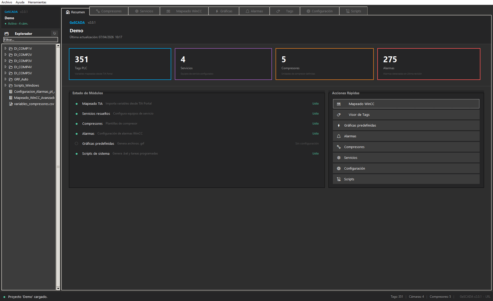
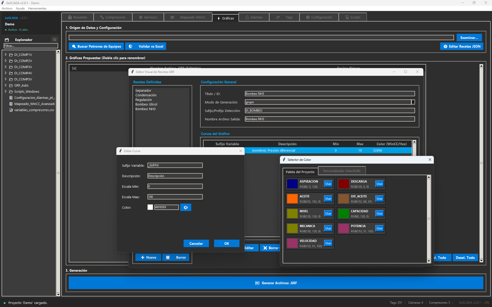
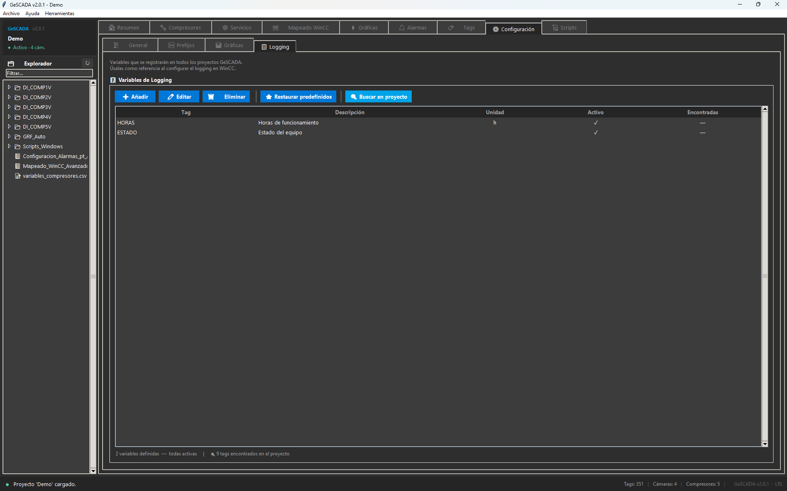
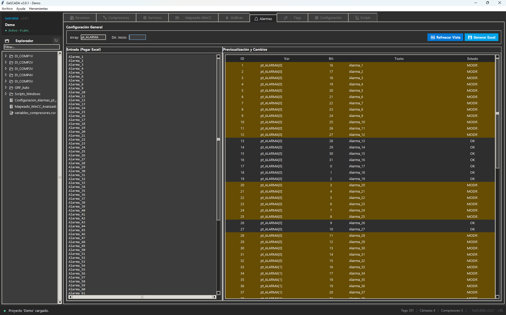

Empezó como hojas de cálculo
Los primeros intentos de acelerar el proceso fueron Excel con fórmulas complejas. Funcionaban, pero tenían límites claros: escala, mantenimiento, errores silenciosos.
GeSCADA centraliza el mapeado de variables, detecta inconsistencias antes de generar y prepara elementos visuales, alarmas y scripts para incorporar el proyecto con más rapidez y consistencia.
Construido en producción. Desarrollado durante proyectos reales de automatización SCADA en Clauger Refrigeración Iberia.
Suite de escritorio. 7 módulos operativos, validación en tiempo real y dashboard de proyecto integrado.

Dashboard de proyecto — KPIs en tiempo real, estado de módulos y acciones rápidas desde la primera pantalla.
GeSCADA nació durante proyectos reales de automatización SCADA, resolviendo los mismos cuellos de botella una y otra vez.
Los primeros intentos de acelerar el proceso fueron Excel con fórmulas complejas. Funcionaban, pero tenían límites claros: escala, mantenimiento, errores silenciosos.
Cuando los Excel ya no eran suficientes, el proceso se formalizó en código. Módulo a módulo, cubriendo cada cuello de botella real del flujo SCADA.
Desde la importación del proyecto TIA hasta la generación de la infraestructura operativa del SCADA — 7 módulos, un ciclo completo.
GeSCADA interpreta el export de TIA Portal, valida coherencia y reutiliza ese conocimiento para generar resultados consistentes en el resto del proyecto.
Procesa el Excel de TIA Portal, resuelve offsets, estructuras y nombres para reconstruir la lógica del proyecto de forma automatizada.
Detecta duplicados, huérfanos, referencias inválidas y cambios entre revisiones antes de generar resultados. Sin sorpresas en la fase final.
Produce documentación visual, alarmas y scripts preparados para incorporar directamente al entorno WinCC con consistencia garantizada.
Cada módulo resuelve un cuello de botella real del flujo de ingeniería — desde la importación del proyecto hasta la infraestructura operativa.
Motor de ingesta que convierte el Excel de TIA Portal en una estructura limpia y validada para WinCC. Detecta automáticamente las estructuras de variables, resuelve los offsets de memoria DB y normaliza los nombres de los tags — sin intervención manual, sin errores de tipado.
Es la fuente de verdad para el resto de la suite.
Auditoría completa del proyecto SCADA en una interfaz tipo Excel. Muestra en tiempo real el estado de todas las variables, detecta inconsistencias — huérfanas, duplicadas, historizadas — y emite un score de calidad del proyecto.
Generador especializado para compresores — los equipos con mayor densidad de variables. Valida la existencia de cada variable en tiempo real y genera en bloque la preconfiguración gráfica, las estructuras de variables para WinCC y sus variables base.
Detecta automáticamente los espacios refrigerados del proyecto — cámaras, salas, túneles — y genera por cada uno la preconfiguración gráfica con autoajuste de rango de temperatura y las estructuras de variables para WinCC.
Detecta automáticamente bombas, separadores, condensadores y otros equipos auxiliares en el mapeado. Genera en bloque la preconfiguración gráfica lista para WinCC — sin tocar un archivo a mano.


Gestiona el ciclo de vida de las alarmas del proyecto. Compara revisiones en tiempo real, detecta qué alarmas son nuevas, modificadas o eliminadas, y gestiona automáticamente el Bit-Swapping de Siemens.
Una de las fuentes de error más comunes en proyectos WinCC a gran escala, resuelta de forma automática.

Genera la infraestructura operativa del SCADA: scripts de arranque y cierre ordenado del Runtime, rutinas de backup automatizadas y tareas programadas de Windows — todo configurable y repetible entre instalaciones.
La suite mantiene un historial de proyectos recientes (MRU) con apertura rápida, persiste el estado por pestaña entre sesiones y gestiona restore points automáticos a través de backup_manager.py. Si algo sale mal, el proyecto puede revertirse a cualquier punto guardado.
El score de calidad no es una métrica del Visor de Tags: es una puntuación viva que atraviesa toda la suite. Cada módulo contribuye señales — variables huérfanas, referencias inválidas, cambios entre revisiones, alarmas con bit-swapping pendiente — y el score refleja el estado real del proyecto en cualquier momento.
Validación previa, menos retrabajo y ahorros documentados en escenarios habituales de trabajo industrial.
Reduce tareas repetitivas entre exportación, revisión y preparación de resultados para WinCC. El ingeniero se centra en lo que aporta valor.
El mapeado actúa como base común que refuerza la coherencia entre origen, validación y salida. Una sola fuente de verdad para todo el proyecto.
Ayuda a detectar errores antes de que lleguen a la fase final de configuración o importación, donde el coste de corrección es mayor.
Proyecto nuevo, actualización, puesta en marcha de cámaras y auditoría de integridad.
GeSCADA evoluciona de forma continua, incorporando nuevas capacidades a partir del uso real en proyectos.
Servicios de Frío, Validación TIA en tiempo real, hotfixes de robustez. Suite completa de 7 módulos operativa.
Logging estructurado y suite de tests automatizados. Mayor trazabilidad y fiabilidad en entornos de producción.
Integración nativa con Git para control de versiones de proyectos WinCC. Trazabilidad completa entre revisiones.
Nuevas integraciones con entornos de programación de otras marcas comerciales de PLC, más allá de TIA Portal.